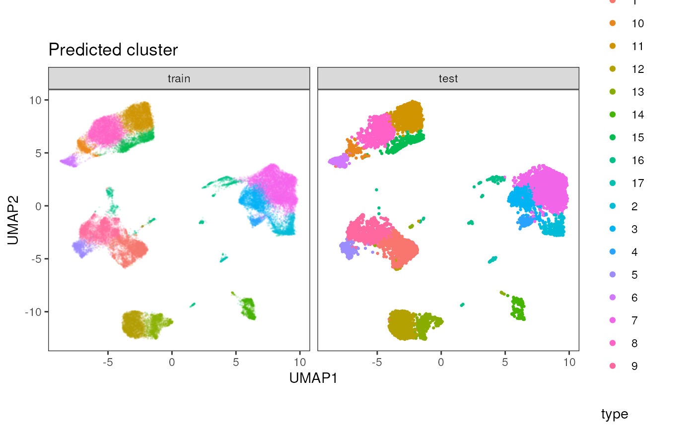

Considering the high number of samples that can be generated with
modern HDC instruments and the number of cells acquired we developed a
data projection workflow in cyCONDOR. With this approach an
initial model it trained including a UMAP dimensionality reduction and a
cell classifier of the cell labels. We can then project any new sample
into the pre-trained model, this operation is much faster and allows to
analyse millions of cell in few minutes.
Loading the data for training
We start by loading the data for the training.
condor_train <- prep_fcd(data_path = "../.test_files/DataProjection/fcs_train/",
max_cell = 5000,
useCSV = FALSE,
transformation = "auto_logi",
remove_param = c("FSC-H", "SSC-H", "FSC-W", "SSC-W", "Time", "live_dead"),
anno_table = "../.test_files/DataProjection/metadata_train.csv",
filename_col = "filename")
condor_train$anno$cell_anno$group <- "train"Loading the data for projection
We also load the data to later project.
condor_test <- prep_fcd(data_path = "../.test_files/DataProjection/fcs_test/",
max_cell = 10000,
useCSV = FALSE,
transformation = "auto_logi",
remove_param = c("FSC-H", "SSC-H", "FSC-W", "SSC-W", "Time", "live_dead"),
anno_table = "../.test_files/DataProjection/metadata_test.csv",
filename_col = "filename")
condor_test$anno$cell_anno$group <- "test"UMAP Projection
We start now by running a UMAP, in this case we set the
ret_model variable to TRUE to keep the UMAP
model in the condor object. The UMAP calculation and data
projection can be performed only based on the protein expression
(expr) as pca would be performed independently
in the two dataset not providing consistent results.
Run UMAP keeping the model
condor_train <- runUMAP(fcd = condor_train,
input_type = "expr",
data_slot = "orig",
nThreads = 4,
ret_model = TRUE)Add data to the embedding
We can now predict the UMAP coordinates of the test data.
condor_test<- learnUMAP(fcd = condor_test,
input_type = "expr",
data_slot = "orig",
fcd_model = condor_train,
nEpochs = 100,
nThreads = 4,
prefix = "pred")The predicted UMAP coordinates can be accessed via
condor_test$umap$pred_expr_orig.
condor_test$umap$pred_expr_orig[1:5,]## UMAP1 UMAP2
## ID10.fcs_1 8.721360 0.634307
## ID10.fcs_2 -2.714980 9.288510
## ID10.fcs_3 -5.952371 -3.586285
## ID10.fcs_4 -3.397721 -11.507561
## ID10.fcs_5 -3.282857 -3.098220Train a classifier for the label transfer
To transfer also the labels from the reference to the projected data
we need to train a cell classifier. We start by clustering the training
data. In this case both FlowSOM and
Phenogpraph can be used as input for the cell label kNN
classifier. In this vignette we use Phenograph.
condor_train <- runPhenograph(fcd = condor_train,
input_type = "expr",
data_slot = "orig",
k = 150)## Run Rphenograph starts:
## -Input data of 45000 rows and 28 columns
## -k is set to 150## Finding nearest neighbors...DONE ~ 55.698 s
## Compute jaccard coefficient between nearest-neighbor sets...## Presorting knn...## presorting DONE ~ 2.402 s
## Start jaccard
## DONE ~ 45.681 s
## Build undirected graph from the weighted links...DONE ~ 6.356 s
## Run louvain clustering on the graph ...DONE ~ 20.055 s## Run Rphenograph DONE, totally takes 127.79s.## Return a community class
## -Modularity value: 0.8444303
## -Number of clusters: 16We can visualize the Phenograph clustering in a
UMAP.
plot_dim_red(fcd= condor_train,
expr_slot = NULL,
reduction_method = "umap",
reduction_slot = "expr_orig",
cluster_slot = "phenograph_expr_orig_k_150",
param = "Phenograph",
title = "Phenograph clustering of the training data set")
Label transfer
Now, we train the classifier on the clustering labels. If you assigned a metacluster label, this can also be used to train the classifier.
Train label transfer kNN classifier
Here, we use the Phenograph clustering labels as an
example to train the classifier. In many cases you probably want to use
the metacluster labels of an annotated flow cytometry data set which had
been previously assigned using metaclustering().
condor_train <- train_transfer_model(fcd = condor_train,
data_slot = "orig",
input_type = "expr",
cluster_slot = "phenograph_expr_orig_k_150",
cluster_var = "Phenograph",
method = "knn",
tuneLength = 5,
trControl = caret::trainControl(method = "cv"))## Loading required package: ggplot2## Loading required package: lattice##
## Attaching package: 'caret'## The following object is masked from 'package:cyCONDOR':
##
## confusionMatrix
condor_train$extras$lt_model$performance_plot
#kNN importance
condor_train$extras$lt_model$features_plotPredict the labels
Based on the trained classifier, we predict now the cluster labels for the test data set.
condor_test <- predict_labels(fcd = condor_test,
data_slot = "orig",
input_type = "expr",
fcd_model = condor_train,
label = "label_pred")The predicted labels are saved in
condor_test$clustering$label_pred.
condor_test$clustering$label_pred[1:5,]## Description predicted_label
## 1 predicted 4
## 2 predicted 10
## 3 predicted 1
## 4 predicted 11
## 5 predicted 1Visualize the results
We provide here some costom code to overlap in a single plot the
results from the train and test condor object. Nevertheless
the independent results of each dataset can be vidualized with
cyCONDOR built-in functions.
Prepare the dataframe
train <- as.data.frame(cbind(condor_train$umap$expr_orig, Phenograph = condor_train$clustering$phenograph_expr_orig_k_150[, 1]))
train$type <- "train"
test <- cbind(condor_test$umap$pred_expr_orig,
condor_test$clustering$label_pred)
test$Description <- NULL
test$Description <- NULL
colnames(test) <- c("UMAP1", "UMAP2", "Phenograph")
test$type <- "test"
vis_data <- rbind(train, test)Overlap UMAP
ggplot(data = vis_data, aes(x = UMAP1, y = UMAP2, color = type, alpha = type, size = type)) +
geom_point() +
scale_color_manual(values = c("gray", "#92278F")) +
scale_alpha_manual(values = c(0.5, 1)) +
scale_size_manual(values = c(0.1, 0.5)) +
theme_bw() +
theme(aspect.ratio = 1, panel.grid = element_blank()) +
ggtitle("UMAP projected")
ggplot(data = vis_data, aes(x = UMAP1, y = UMAP2, color = Phenograph, alpha = type, size = type)) +
geom_point() +
scale_alpha_manual(values = c(0.1, 1)) +
scale_size_manual(values = c(0.1, 0.5)) +
theme_bw() +
theme(aspect.ratio = 1, panel.grid = element_blank()) +
ggtitle("Predicted cluster") + facet_wrap(~type)
Session Info
info <- sessionInfo()
info## R version 4.4.2 (2024-10-31)
## Platform: x86_64-pc-linux-gnu
## Running under: Ubuntu 24.04.1 LTS
##
## Matrix products: default
## BLAS: /usr/lib/x86_64-linux-gnu/openblas-pthread/libblas.so.3
## LAPACK: /usr/lib/x86_64-linux-gnu/openblas-pthread/libopenblasp-r0.3.26.so; LAPACK version 3.12.0
##
## locale:
## [1] LC_CTYPE=en_US.UTF-8 LC_NUMERIC=C
## [3] LC_TIME=en_US.UTF-8 LC_COLLATE=en_US.UTF-8
## [5] LC_MONETARY=en_US.UTF-8 LC_MESSAGES=en_US.UTF-8
## [7] LC_PAPER=en_US.UTF-8 LC_NAME=C
## [9] LC_ADDRESS=C LC_TELEPHONE=C
## [11] LC_MEASUREMENT=en_US.UTF-8 LC_IDENTIFICATION=C
##
## time zone: Etc/UTC
## tzcode source: system (glibc)
##
## attached base packages:
## [1] stats graphics grDevices utils datasets methods base
##
## other attached packages:
## [1] caret_7.0-1 lattice_0.22-7 ggplot2_3.5.2 cyCONDOR_0.3.1
##
## loaded via a namespace (and not attached):
## [1] IRanges_2.40.1 Rmisc_1.5.1
## [3] urlchecker_1.0.1 nnet_7.3-20
## [5] CytoNorm_2.0.1 TH.data_1.1-3
## [7] vctrs_0.6.5 digest_0.6.37
## [9] png_0.1-8 shape_1.4.6.1
## [11] proxy_0.4-27 slingshot_2.14.0
## [13] ggrepel_0.9.6 corrplot_0.95
## [15] parallelly_1.45.0 MASS_7.3-65
## [17] pkgdown_2.1.3 reshape2_1.4.4
## [19] httpuv_1.6.16 foreach_1.5.2
## [21] BiocGenerics_0.52.0 withr_3.0.2
## [23] ggrastr_1.0.2 xfun_0.52
## [25] ggpubr_0.6.1 ellipsis_0.3.2
## [27] survival_3.8-3 memoise_2.0.1
## [29] hexbin_1.28.5 ggbeeswarm_0.7.2
## [31] RProtoBufLib_2.18.0 princurve_2.1.6
## [33] profvis_0.4.0 ggsci_3.2.0
## [35] systemfonts_1.2.3 ragg_1.4.0
## [37] zoo_1.8-14 GlobalOptions_0.1.2
## [39] DEoptimR_1.1-3-1 Formula_1.2-5
## [41] promises_1.3.3 scatterplot3d_0.3-44
## [43] httr_1.4.7 rstatix_0.7.2
## [45] globals_0.18.0 rstudioapi_0.17.1
## [47] UCSC.utils_1.2.0 miniUI_0.1.2
## [49] generics_0.1.4 ggcyto_1.34.0
## [51] base64enc_0.1-3 curl_6.4.0
## [53] S4Vectors_0.44.0 zlibbioc_1.52.0
## [55] flowWorkspace_4.18.1 polyclip_1.10-7
## [57] randomForest_4.7-1.2 GenomeInfoDbData_1.2.13
## [59] SparseArray_1.6.2 RBGL_1.82.0
## [61] ncdfFlow_2.52.1 RcppEigen_0.3.4.0.2
## [63] xtable_1.8-4 stringr_1.5.1
## [65] desc_1.4.3 doParallel_1.0.17
## [67] evaluate_1.0.4 S4Arrays_1.6.0
## [69] hms_1.1.3 glmnet_4.1-9
## [71] GenomicRanges_1.58.0 irlba_2.3.5.1
## [73] colorspace_2.1-1 harmony_1.2.3
## [75] reticulate_1.42.0 readxl_1.4.5
## [77] magrittr_2.0.3 lmtest_0.9-40
## [79] readr_2.1.5 Rgraphviz_2.50.0
## [81] later_1.4.2 future.apply_1.20.0
## [83] robustbase_0.99-4-1 XML_3.99-0.18
## [85] cowplot_1.2.0 matrixStats_1.5.0
## [87] RcppAnnoy_0.0.22 xts_0.14.1
## [89] class_7.3-23 Hmisc_5.2-3
## [91] pillar_1.11.0 nlme_3.1-168
## [93] iterators_1.0.14 compiler_4.4.2
## [95] RSpectra_0.16-2 stringi_1.8.7
## [97] gower_1.0.2 minqa_1.2.8
## [99] SummarizedExperiment_1.36.0 lubridate_1.9.4
## [101] devtools_2.4.5 CytoML_2.18.3
## [103] plyr_1.8.9 crayon_1.5.3
## [105] abind_1.4-8 locfit_1.5-9.12
## [107] sp_2.2-0 sandwich_3.1-1
## [109] pcaMethods_1.98.0 dplyr_1.1.4
## [111] codetools_0.2-20 multcomp_1.4-28
## [113] textshaping_1.0.1 recipes_1.3.1
## [115] openssl_2.3.3 Rphenograph_0.99.1
## [117] TTR_0.24.4 bslib_0.9.0
## [119] e1071_1.7-16 destiny_3.20.0
## [121] GetoptLong_1.0.5 ggplot.multistats_1.0.1
## [123] mime_0.13 splines_4.4.2
## [125] circlize_0.4.16 Rcpp_1.1.0
## [127] sparseMatrixStats_1.18.0 cellranger_1.1.0
## [129] knitr_1.50 clue_0.3-66
## [131] lme4_1.1-37 fs_1.6.6
## [133] listenv_0.9.1 checkmate_2.3.2
## [135] DelayedMatrixStats_1.28.1 Rdpack_2.6.4
## [137] pkgbuild_1.4.8 ggsignif_0.6.4
## [139] tibble_3.3.0 Matrix_1.7-3
## [141] rpart.plot_3.1.2 statmod_1.5.0
## [143] tzdb_0.5.0 tweenr_2.0.3
## [145] pkgconfig_2.0.3 pheatmap_1.0.13
## [147] tools_4.4.2 cachem_1.1.0
## [149] rbibutils_2.3 smoother_1.3
## [151] fastmap_1.2.0 rmarkdown_2.29
## [153] scales_1.4.0 grid_4.4.2
## [155] usethis_3.1.0 broom_1.0.8
## [157] sass_0.4.10 graph_1.84.1
## [159] carData_3.0-5 RANN_2.6.2
## [161] rpart_4.1.24 farver_2.1.2
## [163] reformulas_0.4.1 yaml_2.3.10
## [165] MatrixGenerics_1.18.1 foreign_0.8-90
## [167] ggthemes_5.1.0 cli_3.6.5
## [169] purrr_1.1.0 stats4_4.4.2
## [171] lifecycle_1.0.4 uwot_0.2.3
## [173] askpass_1.2.1 Biobase_2.66.0
## [175] mvtnorm_1.3-3 lava_1.8.1
## [177] sessioninfo_1.2.3 backports_1.5.0
## [179] cytolib_2.18.2 timechange_0.3.0
## [181] gtable_0.3.6 rjson_0.2.23
## [183] umap_0.2.10.0 ggridges_0.5.6
## [185] Rphenoannoy_0.1.0 parallel_4.4.2
## [187] pROC_1.18.5 limma_3.62.2
## [189] jsonlite_2.0.0 edgeR_4.4.2
## [191] RcppHNSW_0.6.0 Rtsne_0.17
## [193] FlowSOM_2.14.0 ranger_0.17.0
## [195] flowCore_2.18.0 jquerylib_0.1.4
## [197] timeDate_4041.110 shiny_1.11.1
## [199] ConsensusClusterPlus_1.70.0 htmltools_0.5.8.1
## [201] diffcyt_1.26.1 glue_1.8.0
## [203] XVector_0.46.0 VIM_6.2.2
## [205] gridExtra_2.3 boot_1.3-31
## [207] TrajectoryUtils_1.14.0 igraph_2.1.4
## [209] R6_2.6.1 tidyr_1.3.1
## [211] SingleCellExperiment_1.28.1 labeling_0.4.3
## [213] vcd_1.4-13 cluster_2.1.8.1
## [215] pkgload_1.4.0 GenomeInfoDb_1.42.3
## [217] ipred_0.9-15 nloptr_2.2.1
## [219] DelayedArray_0.32.0 tidyselect_1.2.1
## [221] vipor_0.4.7 htmlTable_2.4.3
## [223] ggforce_0.5.0 CytoDx_1.26.0
## [225] car_3.1-3 future_1.58.0
## [227] ModelMetrics_1.2.2.2 laeken_0.5.3
## [229] data.table_1.17.8 htmlwidgets_1.6.4
## [231] ComplexHeatmap_2.22.0 RColorBrewer_1.1-3
## [233] rlang_1.1.6 remotes_2.5.0
## [235] colorRamps_2.3.4 ggnewscale_0.5.2
## [237] hardhat_1.4.1 beeswarm_0.4.0
## [239] prodlim_2025.04.28